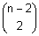

Erweiterung des Geburtstagsproblems: Lösungsformel für k=3
An einer Versammlung befinden sich n Personen. Wie gross ist die Wahrscheinlichkeit, dass mindestens drei am gleichen Tag des Jahres Geburtstag haben?
Lösung
Ereignis A: Mindestens drei von n Personen haben am gleichen Tag Geburtstag. Wahrscheinlichkeit P(A) = ?Entgegengesetztes Ereignis A:
A: Alle n Personen haben an verschiedenen Tagen Geburtstag oder genau je 2 Personen haben am gleichen Tag Geburtstag.
Berechnung der Wahrscheinlichkeit P(A):
Anzahl mögliche Fälle m (1 Jahr = 365 Tage): m = 365n
Anzahl günstige Fälle g für A: g = g0 + g1 + g2 + g3 + ..., wo
g0 = 365 · 364 · 363 · ... · (365 - n + 1)
g1 =
· 365 · 1 · 364 · ... · (365 - n + 2)
g2 = ·
 / 2! · 365 · 1 · 364 · 1 ·... · (365 - n + 3)
g3 = ·
·
/ 3! · 365 · 1 · 364 · 1 · 363 · 1 · ... · (365 - n + 4)
+ ...
P(A) = g/m
Es gilt dann P(A) = 1 - P(A).